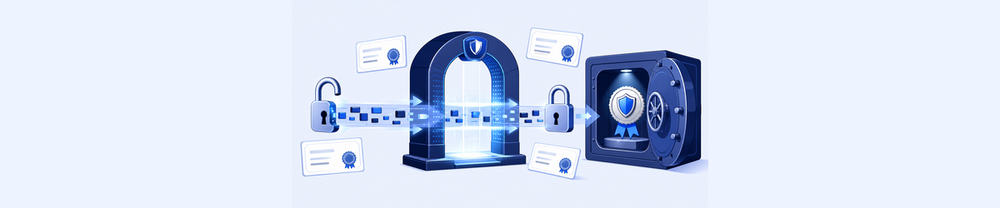
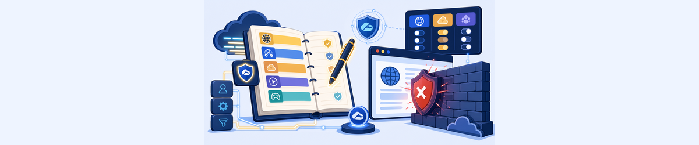
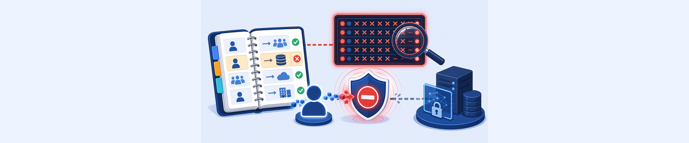

Lab 4: Troubleshooting Policy Settings & Assignment
Scenario: Policy enforcement must be constantly and uniformly applied. You will verify SSL inspection certificate settings, check ZIA URL and Cloud App Control policies, and investigate ZPA access policy blocks using Diagnostics logs.
Policy failures are often invisible — users get generic errors and the cause sits three configuration layers deep. Knowing which layers to check first is the troubleshooter’s advantage.
- A user visits
https://www.microsoft.comand the browser certificate says it was issued by Zscaler Intermediate Root CA, not Microsoft. Why does this happen, and what does it confirm about the SSL inspection configuration? - The ZIA SSL Inspection policy has a rule that exempts Finance and Health URL categories from inspection. A user complains that
healthcare.orgis loading slowly. Could SSL inspection be the cause, and how would you verify? - A ZPA user keeps hitting the “Deny All Else” rule in Access Policy. The rule exists to ensure no unintended access is allowed. What information in the ZPA Diagnostics log entry would you examine to determine why their access request didn’t match a preceding allow rule?
Task 4.1: Check SSL Inspection Policy & Certificate Settings
1 Verify SSL Inspection Policies in ZIA
- In the ZIA Admin portal, go to Policy > SSL Inspection.
- Click the View icon (👁) for a policy to explore its settings — note options like Evaluate Other Policies, Show End User Notifications, and minimum TLS version.
- Observe that default policies like Office 365 One Click and Zscaler Recommended Exemptions implement SSL inspection without disrupting users by exempting known safe categories.
2 Verify the Certificate Installed on the Client PC
- On the Corp: Client PC, open a new browser window and go to
https://www.microsoft.com. - View the certificate for the site (click the lock icon in the address bar, then More information or Certificate is Valid).
- Verify the certificate was issued by: Zscaler Intermediate Root CA (zscalerthree.net) — this confirms SSL inspection is active.
- In the ZIA Admin portal, review the Web Insights logs for this visit:
- Go to Analytics > Web Insights > Logs
- Filter: User =
ptcb32-IT@thezerotrustexchange.com, URL Host containsmicrosoft.com, SSL Policy Reason = Inspected - Customise columns to include: Server Certificate Validation Type, Client Connection TLS Version, Server Connection TLS Version
- Now navigate to
https://www.healthcare.organd check its certificate. You should see the site’s real certificate (not Zscaler) — confirming SSL inspection is exempted for Finance and Health categories. - In Web Insights logs, add the SSL Policy Reason column and verify this site shows Do Not Inspect. Navigate to Policy > SSL Inspection to find the exemption rule (rule 11: No Inspect Finance & Health with URL categories Finance; Health).
Note: Viewing the certificate varies by browser. In Chrome: click the lock icon → Certificate is valid → Details. The issuer field shows whether Zscaler or the original CA signed the certificate.
3 Verify Zscaler Root CA in Windows Certificate Store
- On the Corp: Client PC, open the Microsoft Management Console: type
MMCin Windows command search and press Enter. - In the Console, click the File menu and select Add/Remove Snap-in.
- Select Certificates from the Available Snap-ins list, click Add > and then OK.
- Navigate to Console Root > Trusted Root Certification Authorities > Certificates.
- Verify that Zscaler Root CA is present and is not expired (expiration date should be in the future).
- If the Zscaler Root CA is NOT present: check the ZCC App Profile. Go to the ZCC Portal > Administration > App Profiles. Open the applied profile (e.g. SDC Windows App Policy) and verify Install Zscaler SSL Certificate is toggled ON.
Important: If the Zscaler Root CA is missing from the Windows trust store, all SSL-inspected HTTPS sites will show certificate errors to the user. The ZCC App Profile must have "Install Zscaler SSL Certificate" enabled and the device must have received the latest policy (click Update Policy in ZCC > More).

Task 4.1: Check ZIA Access Policy Settings
4 Review URL Filtering and Cloud App Control Policies
- In the ZIA Admin portal, go to Policy > URL & Cloud App Control.
- Under the URL Filtering Policy tab, review defined policies — for example, rules that block Social Networking categories and send Miscellaneous traffic to Browser Isolation.
- Click the Cloud App Control Policy tab and review pre-configured policies including:
- Social Networking section — a rule allowing LinkedIn, Facebook, and Twitter with Allow Viewing, Posting action, scoped to the HR department group
- Streaming Media section — a rule allowing only Zscaler’s YouTube channel for Marketing department users (Tenant Profile: Zscaler)
- Webmail section — rules sending unsanctioned mail apps to Browser Isolation
- Click the Advanced Policy Settings tab to review SafeSearch, Suspicious New Domain Lookup, and AI/ML-based Content Categorisation settings.
- Go to Administration > Tenant Profiles and review the Zscaler YouTube Channel profile (YouTube Channel ID) and the Zscaler Google profile — these enable Tenancy Restriction to limit users to business accounts only.
5 Test End-User Experience for Policy
- Log out of ZCC and log back in as the Marketing department user:
ptcb32-MKT@thezerotrustexchange.comwith the Session Password. - Go to
https://888.com— a gambling site. Verify that access is blocked (gambling is blocked by URL Filtering Policy). - Go to the Zscaler YouTube channel to test tenant restrictions (bookmark is provided on the Client PC). Verify you can view it.
- Go to
https://linkedin.com— Marketing users should be Isolated (sent to Browser Isolation), not fully blocked. Verify the Browser Isolation banner and watermark appear. - In the ZIA Admin portal, go to Analytics > Web Insights > Logs and filter for the MKT department username. Review the URL Filtering and Cloud App Control policy names that matched, and the URL Categories for each site visited.
- [Optional] Log out of ZCC and log back in as the HR department user (
ptcb32-HR@thezerotrustexchange.com). Verify that HR can access Facebook, LinkedIn, or Twitter directly without being sent to Isolation.
Note: Based on the configured policies, Marketing users should: be able to view Zscaler YouTube videos, be Isolated when visiting other social networking sites like Twitter and LinkedIn, and be blocked from accessing gambling sites.

Task 4.2: Check ZPA Policy Settings
6 Investigate ZPA Policy Blocks via Diagnostics
- In the ZPA Admin portal, go to Dashboard > Applications and scroll down to the Top Policy Blocks widget.
- If no blocks are visible, change the Timeframe dropdown at the top of the page to see a longer period (e.g. 14 Days).
- Click on an error entry (e.g. SE: Policy is not configured for access) and select Show in Logs — this jumps to the Diagnostics Logs view filtered for that error.
- Click to expand a log entry and review the details:
- Username — the user whose access was denied
- Access Policy Name — the specific policy rule that matched (should be Deny All Else)
- SAML Attributes — what attributes ZPA received for this user from the IdP
- SCIM Users and Groups — what groups/departments are provisioned for this user
- Client Type — Client Connector vs. Browser Access
- Trusted Network Criteria — on-trusted vs. off-trusted network
- Go to Policy > Access Policy and review the settings of the policy you identified in the log entry. Verify the criteria of the allow rules that precede the Deny All Else rule — check which User Groups or SAML attributes are required.
Note: The Deny All Else rule at the bottom of ZPA Access Policy is a catch-all that blocks any access request that didn’t match a preceding allow rule. A user hitting this rule means none of the allow rules matched their attributes or client type — examine the SAML attributes and SCIM group membership to find the gap.
